This project explores Neural Radiance Fields (NeRF), a technique for synthesizing novel views of complex 3D scenes from a set of 2D images. The project is divided into three main parts: camera calibration and 3D scanning using ArUco markers, fitting a neural field to 2D images, and finally training a full 3D NeRF from multi-view images. Through this project, I learned how to implement volume rendering, positional encoding, and the complete NeRF pipeline from scratch using PyTorch.
Overview
Part 0: Camera Calibration and 3D Scanning
Part 0.1: Camera Calibration
I calibrated my camera using ArUco markers to obtain the camera intrinsic matrix and distortion coefficients. I captured [NUMBER] calibration images from various angles and distances to ensure robust calibration.
Calibration Process:
- Captured calibration images with varying angles and distances
- Detected ArUco tags using OpenCV's detector
- Extracted corner coordinates and corresponding 3D world points
- Used cv2.calibrateCamera() to compute intrinsic parameters
Calibration Results:
Part 0.2: Capturing My Object
I chose to scan my bunnies jewlery holder. I placed it next to an ArUco marker and captured [NUMBER] images from different angles, maintaining consistent camera settings and zoom level as used during calibration.
Part 0.3: Camera Pose Estimation
Using the calibrated camera parameters, I estimated the camera pose for each captured image using cv2.solvePnP(). This provided the rotation and translation vectors that describe the camera's position and orientation relative to the ArUco tag.
Viser Visualization - Camera Frustums
Below are screenshots of the camera frustums visualized in 3D using Viser, showing the estimated poses for all captured images of the bunny scene.
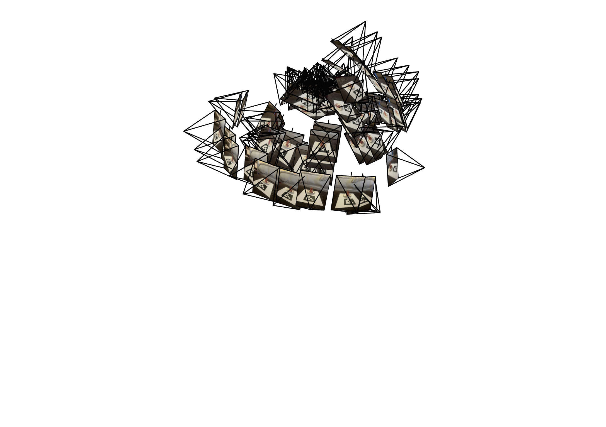
Camera Frustums Showing All Capture Positions
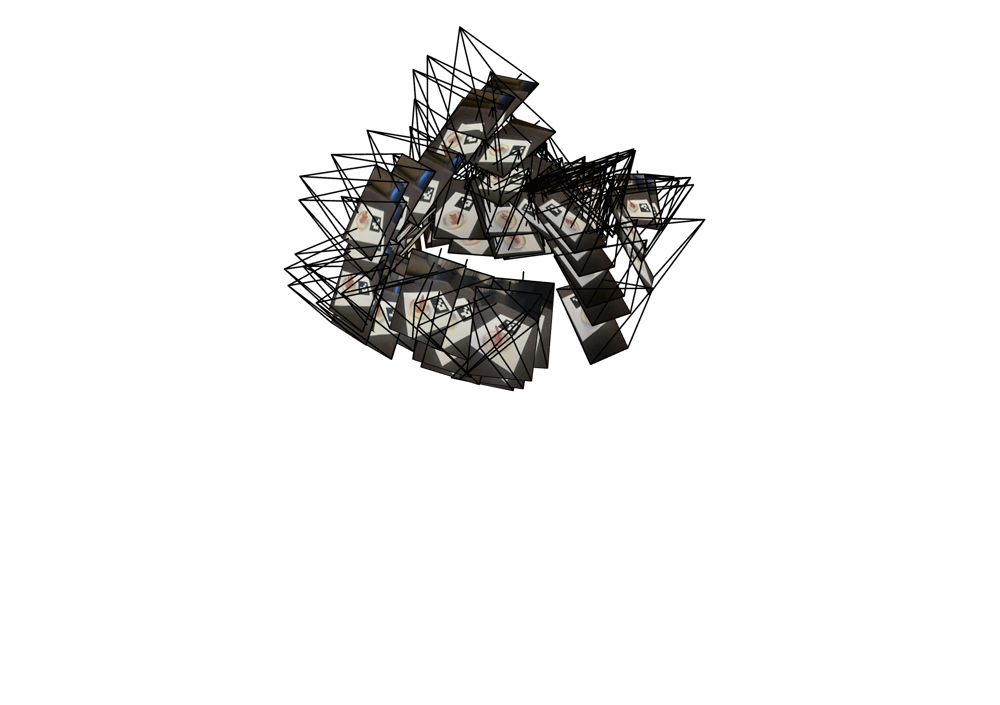
Camera Frustums - Alternative Viewpoint
The visualization shows the spatial distribution of camera positions around the object. Each camera frustum represents one captured image, with the frustum orientation showing the camera's viewing direction and the embedded image showing what was captured from that viewpoint.
Part 1: Fit a Neural Field to a 2D Image
Implementation
Network Architecture
Model Details:
- Number of layers: 4 hidden layers
- Layer width (channels): 360
- Positional encoding max frequency (L): 10
- Learning rate: 1e-2
- Optimizer: Adam
- Loss function: MSE
- Training iterations: 3000 epochs
- Batch size: 10,000 pixels
Architecture Description: I implemented an MLP with positional encoding that takes 2D pixel coordinates and outputs RGB colors. The positional encoding expands the 2D input using sinusoidal functions at multiple frequencies (L=10), creating a 42-dimensional vector. The network uses ReLU activations between linear layers and a Sigmoid activation at the output to constrain colors to [0,1].
Training Results - Provided Fox Image
Training progression on the provided fox image:

Original

0 iterations

200 iterations
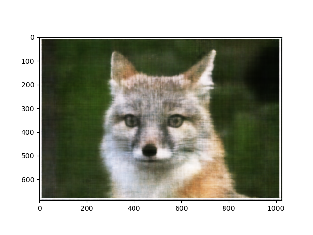
400 iterations

600 iterations

800 iterations

1000 iterations

1200 iterations

1400 iterations
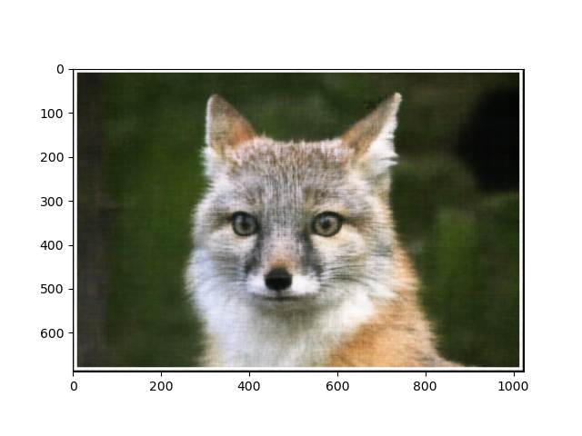
1600 iterations

1800 iterations
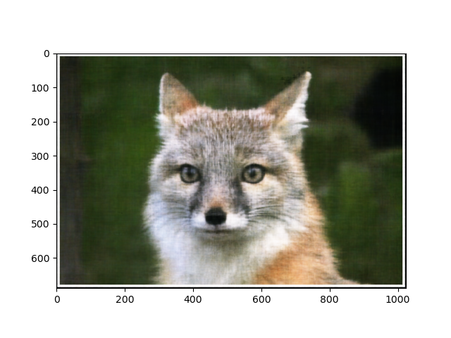
2000 iterations
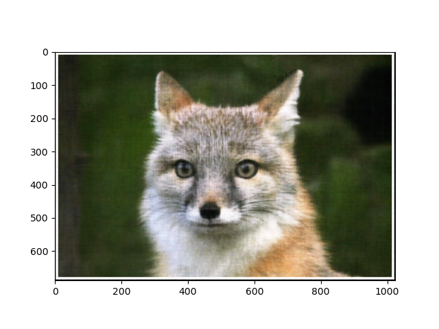
2200 iterations

2400 iterations

2600 iterations
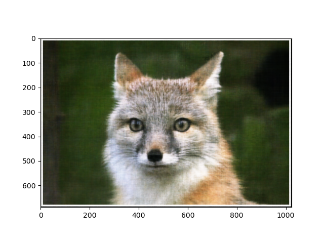
2800 iterations

Final (3000 iters)
Training Results - My Cat Ashie
Training progression on my own image of my cat:

Original

0 iterations

200 iterations

400 iterations

600 iterations

800 iterations

1000 iterations

1200 iterations
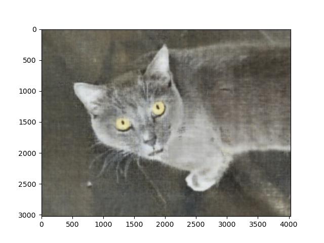
1400 iterations

1600 iterations

1800 iterations
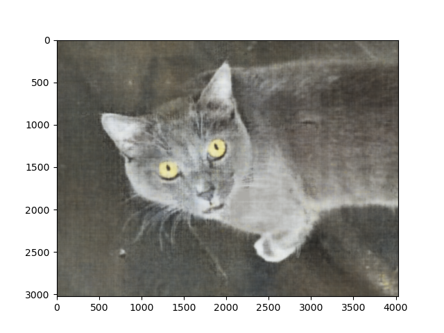
2000 iterations
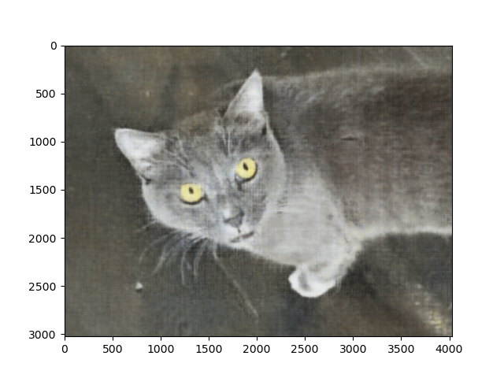
2200 iterations

2400 iterations
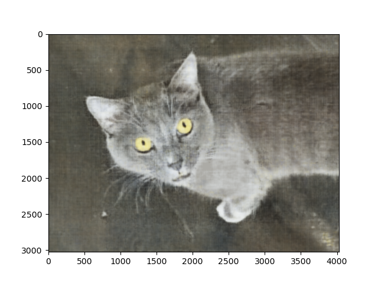
2600 iterations

2800 iterations
Final (3000 iters)
Hyperparameter Exploration
I experimented with different positional encoding frequencies (L) and network widths to understand their impact on reconstruction quality.
Fox - Varying L and Width (2×2 Grid)
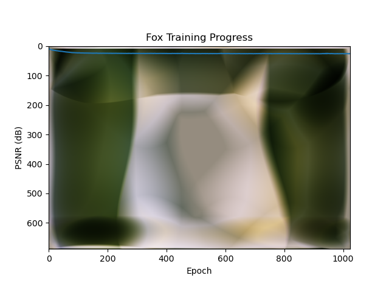
L = 2, Width = 10
L = 2, Width = 256

L = 10, Width = 10
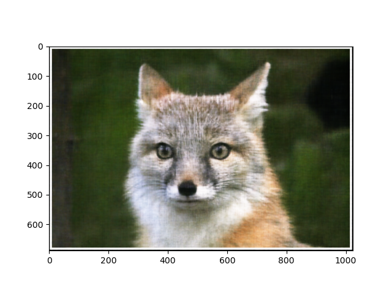
L = 10, Width = 256
Ashie - Varying L and Width (2×2 Grid)

L = 2, Width = 10

L = 2, Width = 256

L = 10, Width = 10
L = 10, Width = 256
Observations: With very low values (L=2, width=10), the network struggles to capture fine details and produces blurry results. Increasing the positional encoding frequency (L) allows the network to represent higher-frequency details. Increasing the network width provides more capacity to learn complex patterns. The best results come from combining high frequency encoding (L=10) with sufficient network capacity (width=256 or 360).
PSNR Curves
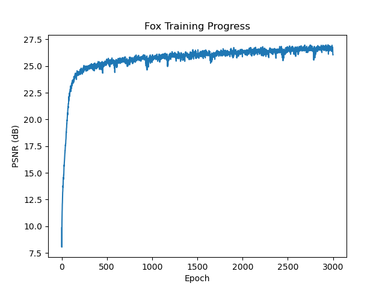
Fox - PSNR vs Training Iterations
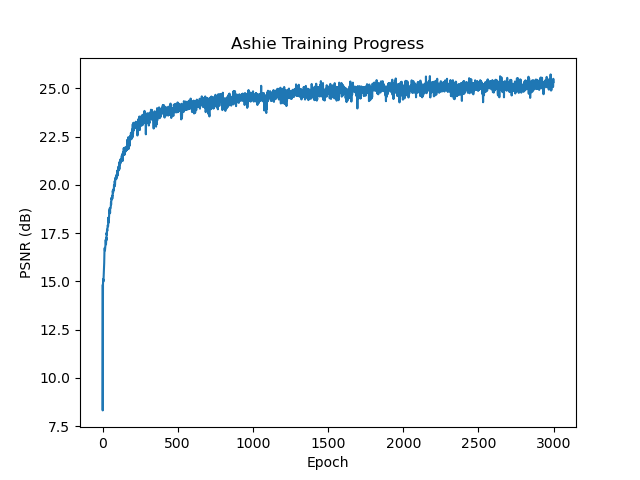
Ashie - PSNR vs Training Iterations
Part 2: Fit a Neural Radiance Field from Multi-view Images
Implementation Overview
I implemented a complete NeRF pipeline including:
- Camera-to-world coordinate transformation: Converting between camera and world coordinate systems
- Pixel-to-camera coordinate conversion: Using camera intrinsics to map pixels to 3D rays
- Ray generation: Creating rays with origins and directions for each pixel
- Point sampling along rays: Discretizing rays with perturbed sampling for regularization
- Neural radiance field network: MLP with positional encoding for predicting color and density
- Volume rendering: Integrating along rays to render final pixel colors
Part 2.1-2.3: Ray Generation and Sampling
Part 2.1: Create Rays from Cameras
Camera to World Coordinate Conversion
I first expand the camera coordinates to include the homogeneous 1 coordinate. Then, I multiply the camera_to_world matrix by the camera coordinates, to obtain the world coordinates.
Pixel to Camera Coordinate Conversion
To enable batching, I do something similar to what we did in Project 3, where instead of doing matrix multiplication, I extract the values from K and then use broadcasting to create the equations. The x coordinate in camera is the (u_pixel - offset_x) * s / x_focal_length, and the y coordinate in camera is the (v_pixel - offset_y) * s / y_focal_length. The Z (depth) is the s, because s is the depth.
Pixel to Ray Coordinate Conversion
I first extract r_o=t from the K matrix, which is the 1st three rows of the last column of K. Then, I use my pixel_to_camera function on K, uv, and s=1. Then I use my camera_to_wolrd function on the resulting x_c with the c2w. I now have world coordinates. To calculate r_d, or the ray direction, I normalize the difference between my world point and the original ray r_o by dividing (X_w-r_o) by the L2 norm of (X_w-r_o). I then return r_o and r_d.
Part 2.2: Sampling
Sampling Rays from Images
I randomly generate N indicies of rays from my total number of rays. I then get the sampled pixels, rays_o, and rays_d from those indices. I precomputed the rays to save the time of re-computing them each time, and so that I could use batching and take advantage of the batch process.
Sampling Points along rays
I am using the MPS for this part to make it go quicker, so I first move to the MPS. Then, I set t = np.linspace(near, far, n_samples) to uniformly sample along the ray. Near=2.0 and Far = 6.0. Then, if I am meant to perturb the data for training purposes, I will randomly add in a "perturbation term" to the t value, so that the samples are randomly spaced instead of uniform. I then expand the t so that its shape matches that of r_o, before following the provided equation of point = r_o + r_d*t, which samples the points along the ray from starting at r_o and moving each interval of size t in direction r_d. I set num samples to 32.
Putting the Dataloading All Together
I created a RaysData class that takes in the Dataset to follow the format in the provided testing code. I first convert all images, K, and c2ws to floats and torch tensor types. Then, I create a meshgrid to create the pairings of possible (u, v) points, being sure to add the 0.5 per the instructions. I assign the self.images, self.K, self.c2ws, self.H, self.W to the RaysData. I then calculate the total rays per image, total rays, and flatten all of the pixels across all images. These will helpful for the ray sampling. Then, for each image (therefore each camera location, and so then each c2w), I use my pixel_to_ray function to calculate the rays_o and rays_d for each image. This way I can take advantage of batching and not need to recalculate with different c2ws later when I am sampling from my dataset.
Visualization of Rays and Samples
Camera Frustums and Sample Points in 3D Space
Sampling Parameters:
- Near plane: 2.0
- Far plane: 6.0
- Number of samples per ray: 32
- Perturbation applied: Yes
Part 2.4: Neural Radiance Field Network
Network Architecture:
- Input: 3D position (x, y, z) + 3D view direction (θ, φ)
- Position encoding frequency: L = 10
- Direction encoding frequency: L = 4
- Number of Linear layers (position path): 8
- Number of Linear layers (RGB path): 4
- Hidden layer width: 256
- Skip connections at layer: 5 (concatenates x_PE)
- Output: RGB color (3 channels) + density σ (1 channel)
My network architecture follows the diagram provided in the instructions. Above, you can see the parameters that I chose for my model. For the model, I created different breaks between where we had to inject the input, which ended up being breaks between layers. My model has a fork where it outputs a value for the density along with the rgb value, which also takes in the injected x_PE. I also created a function to calculate the dimensions of the x and r_d after they were positionally encoded.
Part 2.5: Volume Rendering
I implemented the discrete volume rendering equation to composite colors and densities along rays into final pixel colors. The rendering equation accumulates contributions from each sample point, weighted by transmittance and opacity. To do this, we have the sigmas, which represent the density, deltas, which represent the step size/distance between each sample along our ray, and the opacity, which is the alpha value that we calculate. We can look at opacity as the probability that the given ray hits something and ends at the given point. T_i is the probability that we reach sample i without hitting anything first, or the transmittance. This is calculated by taking the product of the probabilities that we don't stop at all of the points before it, or (1-a_j) for all j less than i. We will then weight the color at each sample by the probability we hit that sample * the probability that it stops at that sample, or T_i * a_i. These can act as a "weight" on how much each sample will contrbute to the final color of what we view.
Training Results - Lego Dataset
Training Progression
Training progression showing how the NeRF learns to reconstruct the 3D scene over time:
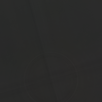
0 iterations
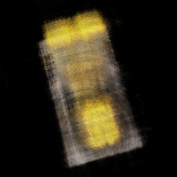
200 iterations
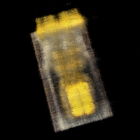
400 iterations
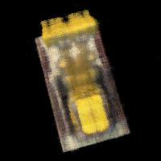
600 iterations
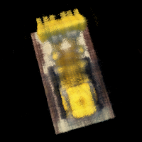
800 iterations
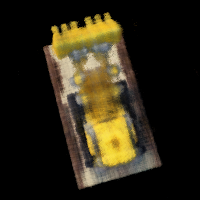
1000 iterations
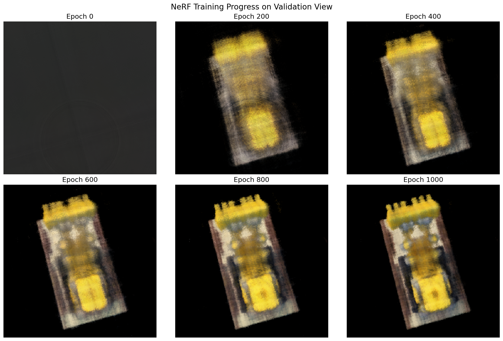
Training Progress Summary
PSNR Curve - Validation Set
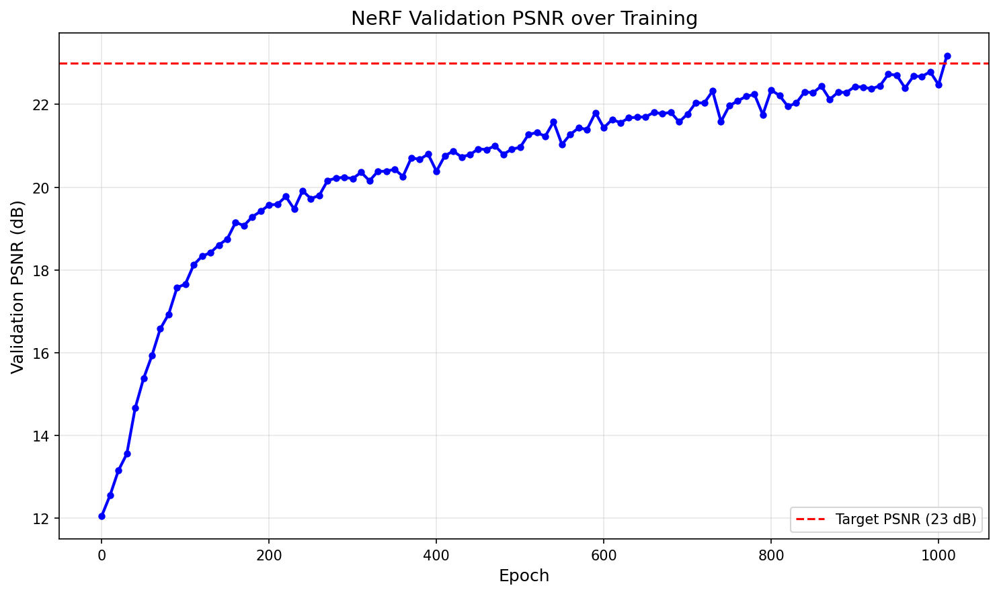
PSNR on Validation Images
Training Details:
- Learning rate: 5e-4
- Optimizer: Adam
- Batch size: 10000 rays
- Points per ray: 64
- Total iterations: 1010
- Final validation PSNR: 23.18 dB
Novel View Synthesis Video
Spherical rendering of the Lego bulldozer from novel viewpoints using the test camera poses:
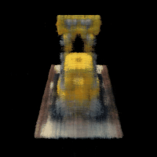
Novel View Synthesis - Lego Dataset (GIF)
Part 2.6: Training NeRF on My Own Data
Dataset and Training Setup
Object: [Describe your object]
Dataset Statistics:
- Training images: [NUMBER]
- Validation images: [NUMBER]
- Image resolution: [WIDTH] × [HEIGHT]
- Focal length: [VALUE]
Hyperparameter Changes:
- Near plane: [VALUE] (adjusted from 2.0)
- Far plane: [VALUE] (adjusted from 6.0)
- Samples per ray: [NUMBER]
- [Any other changes you made and why]
Training Progression
Intermediate renders showing the NeRF learning process:

100 iterations

500 iterations

1000 iterations

Final result
Training Loss Curve

Training Loss over Iterations
Novel View Synthesis
Rendered video of a camera circling my object:
Novel View Synthesis - My Object
Discussion
[Discuss any challenges you faced, what worked well, what didn't work as expected, and how the results compare to the Lego dataset]